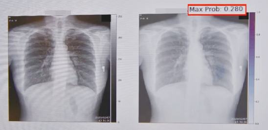
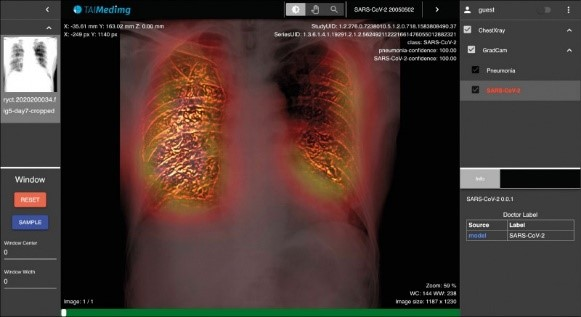
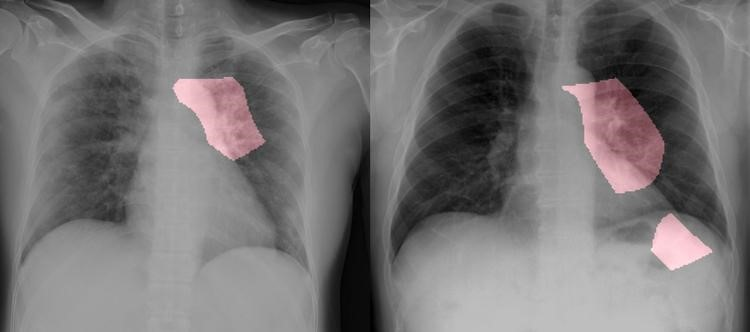

醫療體系 <<
Previous Next >> 經濟
COVID-19
By黃昱翔50833103
前言:由於今年武漢肺炎疫情爆發，所以向透過這次的報告探討AI在人類的醫療方面有什麼樣的幫助。
____
美國及中國研究人員今天發布報告指出，他們已研發出一種人工智慧（AI）工具，可以準確預測哪些剛感染2019冠狀病毒疾病（COVID-19，武漢肺炎）的患者會出現嚴重肺疾。
法新社報導，這項AI工具能測出多項指標，這些指標最能有效預測哪些武漢肺炎患者將出現所謂的急性呼吸窘迫症候群（ARDS）。
急性呼吸窘迫症候群是2019冠狀病毒疾病的嚴重併發症，會導致肺部積水，有這項併發症的武漢肺炎患者死亡率大約50%。
研究團隊運用機器學習演算法，分析中國溫州市兩間醫院的53名武漢肺炎患者數據，發現最能準確預測往後會出現重疾的3項特徵變化。
這些特徵變化包括肝臟酵素丙氨酸轉氨酶（Alanine transaminase，ALT）濃度、身體疼痛及血紅素（hemoglobin）濃度。
研究共同作者、紐約大學葛羅斯曼醫學院（NYU Grossman School of Medicine）教授卡菲（Megan Coffee）指出，一旦有效運用這套演算法，將可協助醫生在資源緊繃的醫療系統中，決定照護的優先次序。
武漢肺炎（新型冠狀病毒病，COVID-19）疫情全球擴散，確診病例突破六百萬人，台灣開發出「武漢肺炎胸腔Ｘ光輔助診斷系統」，以AI人工智慧分析Ｘ光片，可精準早先一步找出感染武漢肺炎者，這套獨步全球的「科技防疫」技術，已有英國、歐盟、美國Facebook公司申請使用。
微軟人工智慧前首席研發總監杜奕瑾所創辦的台灣人工智慧實驗室（Taiwan AI Labs），去年底與衛福部合作開發「瘧疾辨識系統」有成，今年三月武漢肺炎擴及歐美國家，全球疫情大爆發之際，由於當時快篩尚在開發階段，檢驗新冠病毒受限於PCR核酸分子檢測，須等待四小時才知結果。
為使檢測武漢肺炎方式多管齊下，行政院副院長陳其邁邀集台灣人工智慧實驗室、政院資安處、疾管署、健保署、台大醫院、台北醫學大學附設醫院等產官學界開會，開發以人工智慧模式協助診斷，讓沒有接觸過確診患者的醫師能透過AI分析Ｘ光片，早一步掌握肺炎患者。
可在確診前2到5天預警
據指出，肺炎患者若出現病徵，肺部會有纖維化等症狀，明顯與健康民眾、肺結核患者不同。台灣人工智慧實驗室今年將系統建置完成後，共分析健保署提供的一○九件胸部Ｘ光片。
分析發現，可被AI系統判定是武漢肺炎的胸部Ｘ光，早於確診前兩天就拍攝出的有廿七名，早於確診前五天的有四名；「武漢肺炎胸腔Ｘ光輔助診斷系統」可提早預警武漢肺炎確診，降低感染風險，且經台大醫療團隊建議調整後，精準度高達八十九％。截至五月底，國內有台大醫院、北醫附設醫院等四家公私醫學中心申請使用。
精準度89％ 國內4醫院設置
因全球疫情嚴峻，包含英國、歐盟、美國臉書公司，都向台灣人工智慧實驗室申請。只要自購一台胸部Ｘ光機，介接這套AI系統，便可輕鬆判斷出武漢肺炎。該診斷系統目前免費提供外國使用，台灣要以「Taiwan Can Help」模式幫助世界，度過武漢肺炎疫情難關。
資料來源:中央社報導、自由時報



醫療體系 <<
Previous Next >> 經濟